공조냉동기계산업기사 (2019-08-04 기출문제)
1과목: 공기조화
1. 콘크리트로 된 외벽의 실내측에 내장재를 부착했을 때 내장재의 실내측 표면에 결로가 일어나지 않도록 하기 위한 내장두께 L2(mm)는 최소 얼마이어야 하는가? (단, 외기온도 –5℃, 실내온도 20℃, 실내공기의 노점온도 12℃, 콘크리트의 벽두께 100mm, 콘크리트의 열전도율은 0.0016 kW/m·K, 내장재의 열전도율은 0.00017 kW/m·K, 실외측 열전달율은 0.023 kW/m2·K, 실내측 열전달율은 0.009 kW/m2·K 이다.)
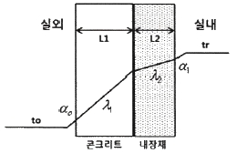
- 19.7
- 22.1
- 25.3
- 37.2
(정답률: 59%)

2. 지하철에 적용할 기계 환기 방식의 기능으로 틀린 것은?
- 피스톤효과로 유발된 열차풍으로 환기효과를 높인다.
- 화재 시 배연기능을 달성한다.
- 터널 내의 고온의 공기를 외부로 배출한다.
- 터널 내의 잔류 열을 배출하고 신선외기를 도입하여 토양의 발열효과를 상승시킨다.
(정답률: 86%)
3. 90℃ 고온소 25 kg을 100℃의 건조포화액으로 가열하는데 필요한 열량(kJ)은? (단, 물의 비열은 4.2 kJ/kg·K 이다.)
- 42
- 250
- 525
- 1⑤0
(정답률: 57%)
4. 쉘 앤 튜브 열교환기에서 유체의 흐름에 의해 생기는 진동의 원인으로 가장 거리가 먼 것은?
- 층류 흐름
- 음향 진동
- 소용돌이 흐름
- 병류의 와류 형성
(정답률: 56%)
5. 열원방식의 분류는 일반 열원방식과 특수 열원방식으로 구분할 수 있다. 다음 중 일반 열원방식으로 가장 거리가 먼 것은?
- 빙축열 방식
- 흡수식 냉동기 + 보일러
- 전동 냉동기 + 보일러
- 흡수식 냉온수 발생기
(정답률: 75%)
6. 공기조화 계획을 진행하기 위한 순서로 옳은 것은?
- 기본계획 → 기본구상 → 실시계획 → 실시설계
- 기본구상 → 기본계획 → 실시설계 → 실시계획
- 기본구상 → 기본계획 → 실시계획 → 실시설계
- 기본계획 → 실시계획 → 기본구상 → 실시설계
(정답률: 72%)
7. 다음 중 흡습성 물질이 도포된 엘리먼트를 적층시켜 원판형태로 만든 로터와 로터를 구동하는 장치 및 케이싱으로 구성되어 있는 전열교환기의 형태는?
- 고정형
- 정지형
- 회전형
- 원판형
(정답률: 71%)
8. 지역난방의 특징에 대한 설명으로 틀린 것은?
- 광범위한 지역의 대규모 난방에 적합하며, 열매는 고온수 또는 고압증기를 사용한다.
- 소비처에서 24시간 연속난방과 연속급탕이 가능하다.
- 대규모화에 따라 고효율 운전 및 폐열을 이용하는 등 에너지 취득이 경제적이다.
- 순환펌프 용량이 크며 열 수송배관에서의 열손실이 작다.
(정답률: 74%)
9. 증기트랩에 대한 설명으로 틀린 것은?
- 바이메탈 트랩은 내부에 열팽창계수가 다른 두 개의 금속이 접합된 바이메탈로 구성되며, 워터해머에 안전하고, 과열증기에도 사용 가능하다.
- 벨로즈 트랩은 금속제의 벨로즈 속에 휘발성 액체가 봉입되어 있어 주위에 증기가 있으면 팽창되고, 증기가 응축되면 온도에 의해 수축하는 원리를 이용한 트랩이다.
- 플로트 트랩은 응축수의 온도차를 이용하여 플로트가 상하로 움직이며 밸브를 개폐한다.
- 버킷 트랩은 응축수의 부력을 이용하여 밸브를 개폐하며 상향식과 하향식이 있다.
(정답률: 71%)
10. 복사난방에 대한 설명으로 틀린 것은?
- 다른 방식에 비해 쾌감도가 높다.
- 시설비가 적게 든다.
- 실내에 유닛이 노출되지 않는다.
- 열용량이 크기 때문에 방열량 조절에 시간이 다소 걸린다.
(정답률: 76%)
11. 주로 대형 덕트에서 덕트의 찌그러짐을 방지하기 위하여 덕트의 옆면 철판에 주름을 잡아주는 것을 무엇이라고 하는가?
- 다이아몬드 브레이크
- 가이드 베인
- 보강앵글
- 시임
(정답률: 77%)
12. 냉방부하 계산시 유리창을 통한 취득열 부하를 줄이는 방법으로 가장 적절한 것은?
- 얇은 유리를 사용한다.
- 투명 유리를 사용한다.
- 흡수율이 큰 재질의 유리를 사용한다.
- 반사율이 큰 재질의 유리를 사용한다.
(정답률: 83%)
13. 다음 중 수-공기 공기조화 방식에 해당하는 것은?
- 2중 덕트 방식
- 패키지 유닛 방식
- 복사 냉난방 방식
- 정풍량 단일 덕트 방식
(정답률: 51%)
14. 두께 150mm, 면적 10m2 인 콘크리트 내벽의 외부온도가 30℃, 내부온도가 20℃ 일 때 8시간 동안 전달되는 열량(kJ)은? (단, 콘크리트 내벽의 열전도율은 1.5 W/m·K 이다.)
- 1350
- 8350
- 13200
- 28800
(정답률: 42%)
15. 습공기의 상태변화에 관한 설명으로 옳은 것은?
- 습공기를 가습하면 상대습도가 내려간다.
- 습공기를 냉각감습하면 엔탈피는 증가한다.
- 습공기를 가열하면 절대습도는 변하지 않는다.
- 습공기를 노점온도 이하로 냉각하면 절대습도는 내려가고, 상대습도는 일정하다.
(정답률: 59%)
16. 공기조화의 조닝계획 시 부하패턴이 일정하고, 사용시간대가 동일하며, 중간기 외기냉방, 소음방지, CO2 등의 실내환경을 고려해야 하는 곳은?
- 로비
- 체육관
- 사무실
- 식당 및 주방
(정답률: 84%)
17. 냉·난방 설계 시 열부하에 관한 설명으로 옳은 것은?
- 인체에 대한 냉방부하는 현열만이다.
- 인체에 대한 난방부하는 현열과 잠열이다.
- 조명에 대한 냉방부하는 현열만이다.
- 조명에 대한 난방부하는 현열과 잠열이다.
(정답률: 70%)
18. 덕트에 설치하는 가이드 베인에 대한 설명으로 틀린 것은?
- 보통 곡률반지름이 덕트 장변의 1.5배 이내 일 때 설치한다.
- 덕트를 작은 곡률로 구부릴 때 통풍저항을 줄이기 위해 설치한다.
- 곡관부의 내측보다 외측에 설치하는 것이 좋다.
- 곡관부의 기류를 세분하여 생기는 와류의 크기를 적게 한다.
(정답률: 73%)
19. 다음 난방방식 중 자연환기가 많이 일어나도 비교적 난방효율이 좋은 것은?
- 온수난방
- 증기난방
- 온풍난방
- 복사난방
(정답률: 81%)
20. 보일러의 급수장치에 대한 설명으로 옳은 것은?
- 보일러 급수의 경도가 낮으면 관내 스케일이 부착되기 쉬우므로 가급적 경도가 높은 물을 급수로 사용한다.
- 보일러 내 물의 광물질이 농축되는 것을 방지하기 위하여 때때로 관수를 배출하여 소량씩 물을 바꾸어 넣는다.
- 수질에 의한 영향을 받기 쉬운 보일러에서는 경수장치를 사용한다.
- 증기보일러에서는 보일러내 수위를 일정하게 유지할 필요는 없다.
(정답률: 66%)
2과목: 냉동공학
21. 냉동효과가 1088 kJ/kg인 냉동사이클에서 1냉동톤당 압축기 흡입증기의 체적(m3/h)은? (단, 압축기 입구의 비체적은 0.5087 m3/kg 이고, 1냉동톤은 3.9 kW 이다.)
- 15.5
- 6.5
- 0.258
- 0.002
(정답률: 51%)
22. 다음 냉매 중 오존파괴지수(ODP)가 가장 낮은 것은?
- R11
- R12
- R22
- R134a
(정답률: 72%)
23. 프레온 냉동기의 흡입배관에 이중 입상관을 설치하는 주된 목적은?
- 흡입가스의 과열을 방지하기 위하여
- 냉매액의 흡입을 방지하기 위하여
- 오일의 회수를 용이하게 하기 위하여
- 흡입관에서의 압력강하를 보상하기 위하여
(정답률: 59%)
24. 냉동장치를 장기간 운전하지 않을 경우 조치방법으로 틀린 것은?
- 냉매의 누설이 없도록 밸브의 패킹을 잘 잠근다.
- 저압측의 냉매는 가능한 한 수액기로 회수한다.
- 저압측의 냉매를 다른 용기로 회수하고 그 대신 공기를 넣어둔다.
- 압축기의 워터재킷을 위한 물은 완전히 뺀다.
(정답률: 77%)
25. 열 및 열펌프에 관한 설명으로 옳은 것은?
- 일의 열당량은
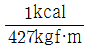
이다. 이것은 427 kgf·m의 일이 열로 변할 때, 1kcal의 열량이 되는 것이다. - 응축온도가 일정하고 증발온도가 내려가면 일반적으로 토출 가스온도가 높아지기 때문에 열펌프의 능력이 상승된다.
- 비열 2.1 kJ/kg·℃, 비중량 1.2 kg/L의 액체 2L를 온도 1℃ 상승시키기 위해서는 2.27 kJ의 열량을 필요로 한다.
- 냉매에 대해서 열의 출입이 없는 과정을 등온 압축이라 한다.
(정답률: 81%)
26. 냉매에 대한 설명으로 틀린 것은?
- R-21은 화학식으로 CHCl2F 이고, CClF2 - ClF2는 R-113 이다.
- 냉매의 구비조건으로 응고점이 낮아야 한다.
- 냉매의 구비조건으로 증발열과 열전도율이 커야 한다.
- R-500dms R-12와 R-152를 합한 공비 혼합냉매라 한다.
(정답률: 73%)
27. 압축기의 설치 목적에 대한 설명으로 옳은 것은?
- 엔탈피 감소로 비체적을 증가시키기 위해
- 상온에서 응축 액화를 용이하게 하기 위한 목적으로 압력을 상승시키기 위해
- 수냉식 및 공냉색 응축기의 사용을 위해
- 압축 시 임계온도 상승으로 상온에서 응축액화를 용이하게 하기 위해
(정답률: 65%)
28. 냉동장치에서 액봉이 쉽게 발생되는 부분으로 가장 거리가 먼 것은?
- 액펌프 방식의 펌프출구와 증발기 사이의 배관
- 2단압축 냉동장치의 중간냉각기에서 과냉각된 액관
- 압축기에서 응축기로의 배관
- 수액기에서 증발기로의 배관
(정답률: 56%)
29. 어떤 냉동기로 1시간당 얼음 1ton을 제조하는데 37kW의 동력을 필요로 한다. 이 때 사용하는 물의 온도는 10℃ 이며 얼음은 –10℃ 이었다. 이 냉동기의 성적계수는? (단, 융해열은 335 kJ/kg 이고, 물의 비열은 4.19 kJ/kg·K, 얼음의 비열은 2.09 kJ/kg·K 이다.)
- 2.0
- 3.0
- 4.0
- 5.0
(정답률: 52%)
30. 증발온도(압력)가 감소할 때, 장치에 발생되는 현상으로 가장 거리가 먼 것은? (단, 응축온도는 일정하다.)
- 성적계수(COP) 감소
- 토출가스 온도 상승
- 냉매 순환량 증가
- 냉동 효과 감소
(정답률: 68%)
31. 다음 중 냉동장치의 운전상태 점검 시 확인해야 할 사항으로 가장 거리가 먼 것은?
- 윤활유의 상태
- 운전 소음 상태
- 냉동장치 각부의 온도 상태
- 냉동장치 전원의 주파수 변동 상태
(정답률: 73%)
32. 다음 중 줄-톰슨 효과와 관련이 가장 깊은 냉동방법은?
- 압축기체의 팽창에 의한 냉동법
- 감열에 의한 냉동법
- 흡수식 냉동법
- 2원 냉동법
(정답률: 55%)
33. 표준냉동사이클에서 냉매 액이 팽창밸브를 지날 때 냉매의 온도, 압력, 엔탈피의 상태변화를 올바르게 나타낸 것은?
- 온도 : 일정, 압력 : 감소, 엔탈피 : 일정
- 온도 : 일정, 압력 : 감소, 엔탈피 : 감소
- 온도 : 감소, 압력 : 일정, 엔탈피 : 일정
- 온도 : 감소, 압력 : 감소, 엔탈피 : 일정
(정답률: 78%)
34. 흡수식 냉동기의 특징에 대한 설명으로 틀린 것은?
- 부분 부하에 대한 대응성이 좋다.
- 용량제어의 범위가 넓어 폭넓은 용량제어가 가능하다.
- 초기 운전 시 정격 성능을 발휘할 때까지의 도달 속도가 느리다.
- 압축시 냉동기에 비해 소음과 진동이 크다.
(정답률: 77%)
35. 압축기의 클리어런스가 클 경우 상태 변화에 대한 설명으로 틀린 것은?
- 냉동능력이 감소한다.
- 체적효율이 저하한다.
- 압축기가 과열한다.
- 토출가스의 온도가 감소한다.
(정답률: 69%)
36. 브라인의 구비조건으로 틀린 것은?
- 비열이 크고 동결온도가 낮을 것
- 불연성이며 불활성일 것
- 열전도율이 클 것
- 점성이 클 것
(정답률: 76%)
37. 증발온도 –15℃, 응축온도 30℃인 이상적인 냉동기의 성적계수(COP)는?
- 5.73
- 6.41
- 6.73
- 7.34
(정답률: 46%)
38. 열전달에 대한 설명으로 틀린 것은?
- 열전도는 물체 내에서 온도가 높은 쪽에서 낮은 쪽으로 열이 이동하는 현상이다.
- 대류는 유체의 열이 유체와 함께 이동하는 현상이다.
- 복사는 떨어져 있는 두 물체사이의 전열현상이다.
- 전열에서는 전도, 대류, 복사가 각각 단독으로 일어나는 경우가 많다.
(정답률: 73%)
39. 암모니아 냉동기에서 유분리기의 설치위치로 가장 적당한 곳은?
- 압축기와 응축기 사이
- 응축기와 팽창밸브 사이
- 증발기외 압축기 사이
- 팽창밸브와 증발기 사이
(정답률: 66%)
40. 다음과 같은 조건에서 작동하는 냉동장치의 냉매순환량(kg/h)은? (단, 1RT는 3.9 kW 이다.)
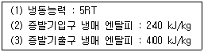
- 325.2
- 438.8
- 512.8
- 617.3
(정답률: 52%)
3과목: 배관일반
41. 냉매배관 설계 시 유의사항으로 틀린 것은?
- 2중 입상관 사용 시 트랩을 크게 한다.
- 과도한 압력강하를 방지한다.
- 압축기로 액체 냉매의 유입을 방지한다.
- 압축기를 떠난 윤활유가 일정비율로 다시 압축기로 되돌아오게 한다.
(정답률: 73%)
42. 고가 탱크식 급수설비에서 급수경로를 바르게 나타낸 것은?
- 수도본관 → 저수조 → 옥상탱크 → 양수관 → 급수관
- 수도본관 → 저수조 → 양수관 → 옥상탱크 → 급수관
- 저수조 → 옥상탱크 → 수도본관 → 양수관 → 급수관
- 저수조 → 옥상탱크 → 양수관 → 수도본관 → 급수관
(정답률: 67%)
43. 다음 중 건물의 급수량 산정의 기준과 가장 거리가 먼 것은?
- 건물의 높이 및 층수
- 건물의 사용 인원수
- 설치될 기구의 수량
- 건물의 유효면적
(정답률: 60%)
44. 다음 중 통기관의 종류가 아닌 것은?
- 각개 통기관
- 루프 통기관
- 신정 통기관
- 분해 통기관
(정답률: 74%)
45. 제조소 및 공급소 밖의 도시가스 배관 설비 기준으로 옳은 것은?
- 철도부지에 매설하는 경우에는 배관의 외면으로부터 궤도 중심까지 3m 이상 거리를 유지해야 한다.
- 철도부지에 매설하는 경우 지표면으로부터 배관의 외면까지의 깊이를 1.2m 이상 유지해야 한다.
- 하천규역을 횡단하는 배관의 매설은 배관의 외면과 계획하상높이와의 거리 2m 이상 거리를 유지해야 한다.
- 수로 밑을 횡단하는 배관의 매설은 1.5m 이상, 기타 좁은 수로인 경우 0.8m 이상 깊게 매설해야 한다.
(정답률: 64%)
46. 펌프에서 캐비테이션 방지대책으로 틀린 것은?
- 흡입 양정을 짧게 한다.
- 양흡입 펌프를 단흡입 펌프로 바꾼다.
- 펌프의 회전수를 낮춘다.
- 배관의 굽힘을 적게 한다.
(정답률: 64%)
47. 간접배수관의 관경이 25A일 때 배수구 공간으로 최소 몇 mm 가 가장 적절한가?
- 50
- 100
- 150
- 200
(정답률: 72%)
48. 증기난방 배관 시공법에 관한 설명으로 틀린 것은?
- 증기 주관에서 가지관을 분기할 때는 증기 주관에서 생성된 응축수가 가지관으로 들어가지 않도록 상향 분기한다.
- 증기 주관에서 가지관을 분기하는 경우에는 배관의 신축을 고려하여 3개 이상의 엘보를 사용한 스위블 이음으로 한다.
- 증기 주관 말단에는 관말트랩을 설치한다.
- 증기관이나 환수관이 보 또는 출입문 등 장애물과 교차할 때는 장애물을 관통하여 배관한다.
(정답률: 66%)
49. 공기조화 설비의 구성과 가장 거리가 먼 것은?
- 냉동기 설비
- 보일러 실내기기 설비
- 위생기구 설비
- 송풍기, 공조기 설비
(정답률: 79%)
50. 암모니아 냉동설비의 배관으로 사용하기에 가장 부적절한 배관은?
- 이음매 없는 동관
- 저온 배관용 강관
- 배관용 탄소강 강관
- 배관용 스테인리스 강관
(정답률: 79%)
51. 건물의 시간당 최대 예상 급탕량이 2000 kg/h 일 때, 도시가스를 사용하는 급탕용 보일러에서 필요한 가스 소묘량(kg/h)은? (단, 급탕온도 60℃, 급수온도 20℃, 도시가스 발열량 15000 kcal/kg, 보일러 효율이 95% 이며, 열손실 및 예열부하는 무시한다.)
- 5.6
- 6.6
- 7.6
- 8.6
(정답률: 36%)
52. 다음 특징은 어떤 포집기에 대한 설명인가?
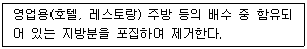
- 드럼 포집기
- 오일 포집기
- 그리스 포집기
- 플라스터 포집기
(정답률: 68%)
53. 다음 배관 부속 중 사용 목적이 서로 다른 것과 연결한 것은?
- 플러그 - 캡
- 티 - 리듀서
- 니플 - 소켓
- 유니언 – 플랜지
(정답률: 73%)
54. 자동 2방향 밸브를 사용하는 냉온수 코일 배관법에서 바이패스관에 설치하기에 가장 적절한 밸브는?
- 게이트밸브
- 체크밸브
- 글로브밸브
- 감압밸브
(정답률: 61%)
55. 도시가스 배관에서 중압은 얼마의 압력을 의미하는가?
- 0.1 MPa 이상 1 MPa 미만
- 1 MPa 이상 3 MPa 미만
- 3 MPa 이상 10 MPa 미만
- 10 MPa 이상 100 MPa 미만
(정답률: 70%)
56. 냉동배관 중 액관 시공 시 유의사항으로 틀린 것은?
- 매우 긴 입상 배관의 경우 압력이 증가하게 되므로 충분한 과냉각이 필요하다.
- 배관은 가능한 짧게 하여 냉매가 증발하는 것을 방지한다.
- 가능한 직선적인 배관으로 하고, 곡관의 곡률반경은 가능한 크게 한다.
- 증발기가 응축기 또는 수액기보다 높은 위치에 설치되는 경우는 액을 충분히 과냉각시켜 액 냉매가 관내에서 증발하는 것을 방지하도록 한다.
(정답률: 56%)
57. 강관을 재질 상으로 분류한 것이 아닌 것은?
- 탄소 강관
- 합금 강관
- 전기 용접강관
- 스테인리스 강관
(정답률: 79%)
58. 단열시공 시 곡면부 시공에 적합하고, 표면에 아스팔트 피복을 하면 –60℃ 정도 까지 보냉이 되고 양모, 우모 등의 모(毛)를 이용한 피복재는?
- 실리카울
- 아스베스토
- 섬유유리
- 펠트
(정답률: 73%)
59. 기수 혼합 급탕기에서 증기를 물에 직접 분사시켜 가열하면 압력차로 인해 소음이 발생한다. 이러한 소음을 줄이기 위해 사용하는 설비는?
- 스팀 사일렌서
- 응축수 트랩
- 안전밸브
- 가열코일
(정답률: 83%)
60. 유체의 흐름을 한 방향으로만 흐르게 하고 반대 방향으로는 흐르지 못하게 하는 밸브의 도시기호는?
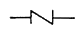
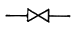
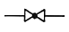
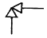
(정답률: 81%)
4과목: 전기제어공학
61. 서보전동기에 대한 설명으로 틀린 것은?
- 정·역운전이 가능하다.
- 직류용은 없고 교류용만 있다.
- 급가속 및 급감속이 용이하다.
- 속응성이 대단히 높다.
(정답률: 78%)
62. 자동연소 제어에서 연료의 유량과 공기의 유량 관계가 일정한 비율로 유지되도록 제어하는 방식은?
- 비율제어
- 시퀀스제어
- 프로세스제어
- 프로그램제어
(정답률: 76%)
63. 저항 R에 100V의 전압을 인가하여 10A의 전류를 1분간 흘렸다면, 이때의 열량은 약 몇 kcal 인가?
- 14.4
- 28.8
- 60
- 120
(정답률: 40%)
64. 다음 블록선도의 특성방정식으로 옳은 것은?
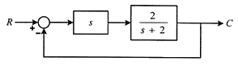
- 3s + 2 = 0
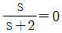
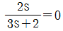
- 2s = 0
(정답률: 45%)
65. 직류기의 브러시에 탄소를 사용하는 이유는?
- 접촉 저항이 크다.
- 접촉 저항이 작다.
- 고유 저항이 동보다 작다.
- 고유 저항이 동보다 크다.
(정답률: 57%)
66. 제어계에서 제어량이 원하는 값을 갖도록 외부에서 주어지는 값은?
- 동작신호
- 조작량
- 목표값
- 궤환량
(정답률: 51%)
67. 그림과 같은 평형 3상 회로에서 전력계의 지시가 100W 일 때 3상 전력은 몇 W 인가? (단, 부하의 역률은 100%로 한다.)
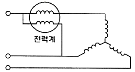
- 100√2
- 100√3
- 200
- 300
(정답률: 55%)
68. 그림과 같은 신호흐름선도의 선형방정식은?
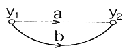
- y2 = (a + 2b)y1
- y2 = (a + b)y1
- y2 = (2a + b)y1
- y2 = 2(a + b)y1
(정답률: 69%)
69. R-L 직렬회로에 100V 의 교류 전압을 가했을 때 저항에 걸리는 전압이 80V 이었다면 인덕턴스에 걸리는 전압(V)은?
- 20
- 40
- 60
- 80
(정답률: 49%)
70. 교류회로에서 역률은?
- 무효전력 / 피상전력
- 유효전력 / 피상전력
- 무효전력 / 유효전력
- 유효전력 / 무효전력
(정답률: 67%)
71. 변압기 내부 고장 검출용 보호계전기는?
- 차동계전기
- 과전류계전기
- 역상계전기
- 부족전압계전기
(정답률: 69%)
72. 제어시스템의 구성에서 서보전동기는 어디에 속하는가?(문제 오류로 가답안 발표시 2번으로 발표되었지만 확정 답안 발표시 2, 3번이 정답 처리되었습니다. 여기서는 2번을 누르면 정답 처리 됩니다.)
- 조절부
- 제어대상
- 조작부
- 검출부
(정답률: 73%)
73. i=2t2 + 8t(A)로 표시되는 전류가 도선에 3초 동안 흘렀을 때 통과한 전체 전하량(C)은?
- 18
- 48
- 54
- 61
(정답률: 49%)
74. 적분시간이 3초이고, 비례감도가 5인 PI제어계의 전달함수는?
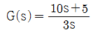
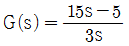
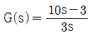
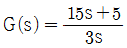
(정답률: 55%)
75. 서보기구의 제어량에 속하는 것은?
- 유량
- 압력
- 밀도
- 위치
(정답률: 72%)
76. 운동계의 각속도 ω는 전기계의 무엇과 대응되는가?
- 저항
- 전류
- 인덕턴스
- 커패시턴스
(정답률: 66%)
77. 정상편차를 제거하고 응답속도를 빠르게 하여, 속응성과 정상상태 응답 특성을 개선하는 제어동작은?
- 비례동작
- 비례적분동작
- 비례미분동작
- 비례미분적분동작
(정답률: 62%)
78. 직류전동기의 속도제어방법이 아닌 것은?
- 계자제어법
- 직렬저항법
- 병렬저항법
- 전압제어법
(정답률: 58%)
79. 그림과 같은 유접점 회로의 논리식은?
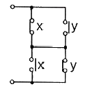
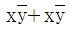
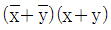
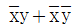
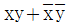
(정답률: 62%)
80. 피드백 제어계에서 제어요소에 대한 설명 중 옳은 것은?
- 목표값에 비례하는 신호를 발생하는 요소이다.
- 조절부와 검출부로 구성되어 있다.
- 동작신호를 조작량으로 변화시키는 요소이다.
- 조절부와 비교부로 구성되어 있다.
(정답률: 50%)
1/0.00288 = 1/0.023 + 0.1/0.0016 + L2/0.00017 + 1/0.009
L2= 0.221m = 22.1mm